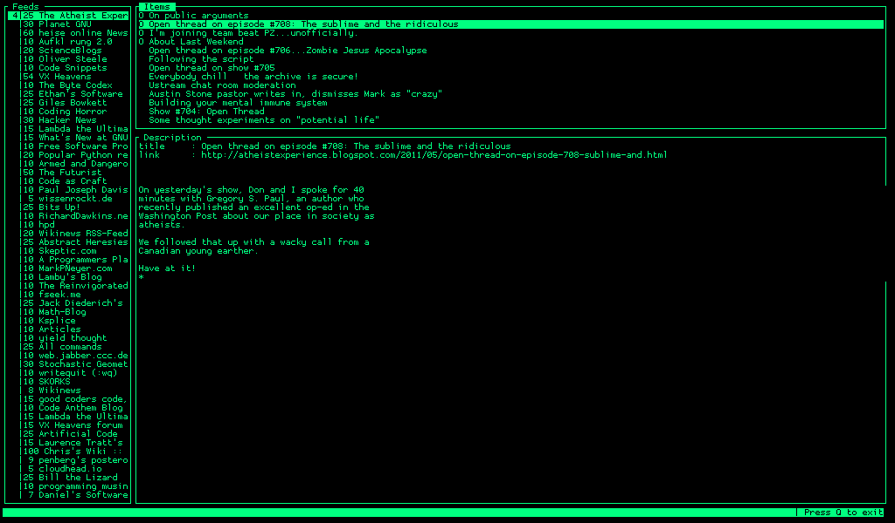

# .__ #___________ ____ ____ | | ____ #\____ \__ \ / ___\ / ___\| | _/ __ \ #| |_> > __ \_/ /_/ > /_/ > |_\ ___/ #| __(____ /\___ /\___ /|____/\___ > #|__| \//_____//_____/ \/ # # Author: gentoomen.org # Copyright (c) gentoomen.org 2011
paggle is a simple feed reader written in python, using ncurses for its interface, feedparser to parse feeds and pysqlite to store the information of feeds. In case you are wondering, the name comes from another excellent feed reader, called raggle, written in ruby.
A simple Screenshot: 